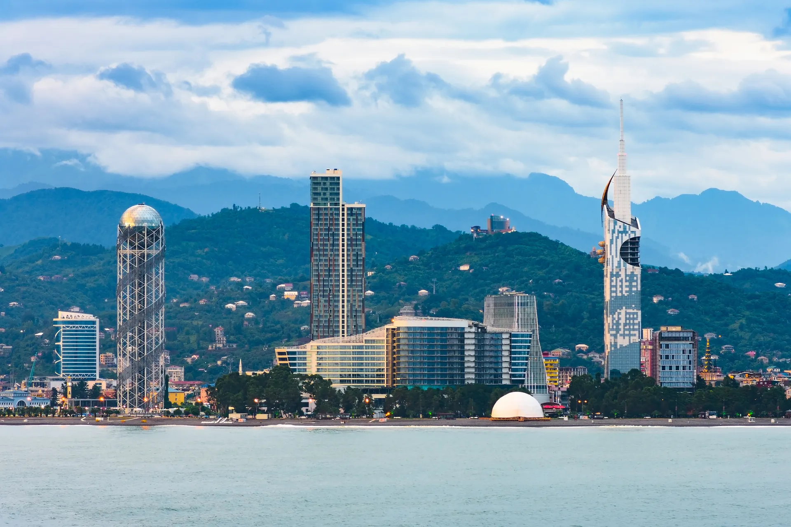
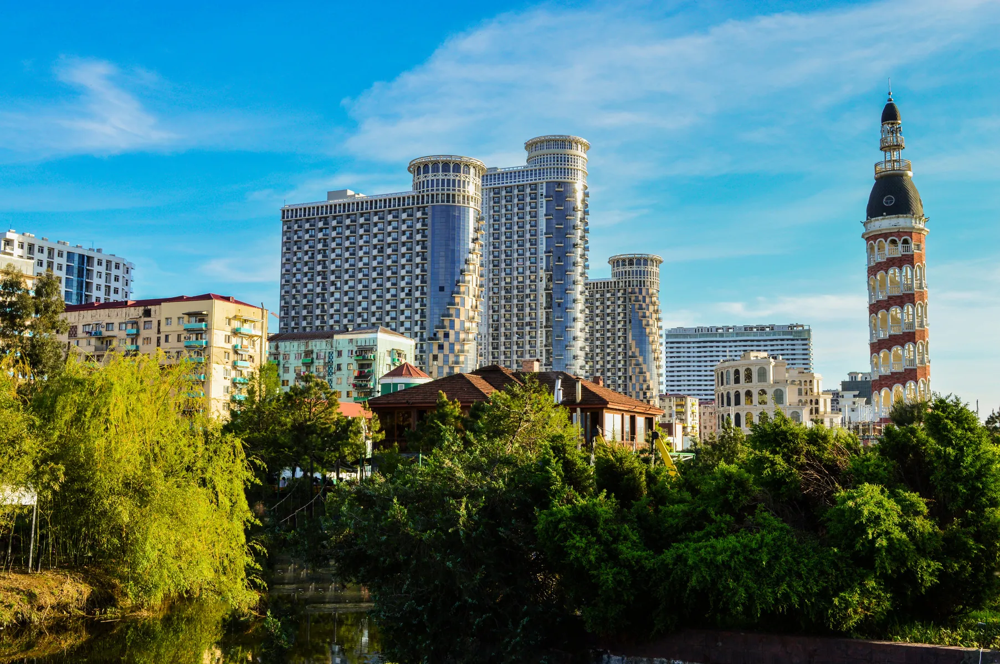

ДЕНЬ 01 01 / 08
Прилететь
к морю.
Ташкент → Батуми или Трабзон. Встреча в аэропорту, трансфер, заселение и первый спокойный вечер на черноморской набережной.
- Трансфер в отель
- Вечерняя прогулка
- Первый ужин у моря

BLACK SEA ESCAPE / 2027
8 дней по маршруту Ризе, Узунгёль, Айдер и Батуми.
Листайте, чтобы начать ↓ТАМ, ГДЕ ГОРЫ ВСТРЕЧАЮТ МОРЕ
Мы собрали оба маршрута из вашей программы в одно выразительное путешествие: с мягким ритмом первых дней, природными открытиями, свободным временем и финальным возвращением домой.
МАРШРУТ
Черноморская дуга из Турции в Грузию — через горы, чайные яйлы, озёра и вечерний город у моря.
08 DAYS / 07 NIGHTS
Каждая карточка — отдельная глава путешествия. Только места, где хочется задержаться.
ДЕНЬ 01 01 / 08
Ташкент → Батуми или Трабзон. Встреча в аэропорту, трансфер, заселение и первый спокойный вечер на черноморской набережной.
ДЕНЬ 02 02 / 08
Батуми раскрывается за пределами города: мост царицы Тамары, водопад Махунцети и древняя крепость Гонио-Апсарос.
ДЕНЬ 03 03 / 08
Дорога в Айдер Яйласы — через чайные плантации, густые леса и горные реки. По пути: Зилкале и мощный водопад Паловит.
ДЕНЬ 04 04 / 08
Свободный день в Ризе или Батуми. Набережные, рынки, ботанический сад, чайные сады, маленькие кафе — без тайминга и спешки.
ДЕНЬ 05 05 / 08
Переезд вдоль Чёрного моря. Красивые перевалы, остановки для фото, паспортный контроль — и новая глава на другом берегу.
ДЕНЬ 06 06 / 08
Выезд в Узунгёль — живописное горное озеро Черноморского региона. Пещеры Карача, Torul Cam Teras и виды, которые не помещаются в кадр.
ДЕНЬ 07 07 / 08
Время Батуми: старый город, морская набережная, танцующие фонтаны, площади и вечер, который можно прожить по своему сценарию.
ДЕНЬ 08 08 / 08
Завтрак, последние прогулки и трансфер в аэропорт. Возвращение в Ташкент — с полным фотоальбомом, новыми вкусами и ощущением пройденного пути.
ЦЕНА
Стоимость тура
от $—
за человека · 8 дней / 7 ночей
Пример — укажите вашу цену в script.js (CONFIG.price).
Забронировать место ↗ДАТЫ ВЫЕЗДОВ
Даты — пример. Обновите список выездов под ваш сезон.
ОТЗЫВЫ · ПРИМЕР — ЗАМЕНИТЕ НА РЕАЛЬНЫЕ
«Горы Ризе и вечерний Батуми в одном туре — идеально. Всё чётко по времени, гид супер.»
«Свободный день — лучшее решение. Не устали, успели и отдохнуть, и посмотреть.»
«Узунгёль — сказка. Фотографии не передают. Спасибо за организацию!»
О НАС
Небольшая команда, которая знает регион не по путеводителям. Продуманная логистика, проверенные отели, гид рядом на всём маршруте. Текст — пример, замените на рассказ о себе.
ВОПРОСЫ
Для граждан Узбекистана Турция и Грузия — безвизовый въезд на срок поездки. Нужен действующий загранпаспорт.
Удобную обувь, ветровку (в горах прохладно), купальник, зарядки и хорошее настроение. Полный список пришлём после брони.
Обычно 8–16 человек. Небольшие группы — больше внимания и гибкости в маршруте.
Русскоговорящий гид на всём маршруте. По запросу — узбекский или английский.
Да, маршрут подходит для семей. Для детей — специальные условия, уточняйте при бронировании.
Бронь по предоплате, остаток — до выезда. Условия возврата обсуждаем индивидуально. Напишите нам — всё расскажем.
